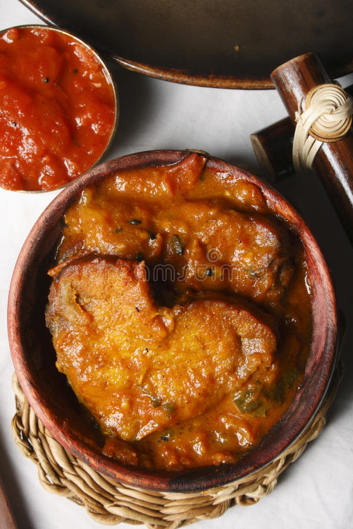

Honey
It is one of the best food in the world. Subhanalloh

Mashed Potato
This is called Alu-Bharta in Bangla. This is very popular in West-Bengal. Mess dwellers fond of it.

Tenga Dish
I don't know what is this. I collected it from internet.